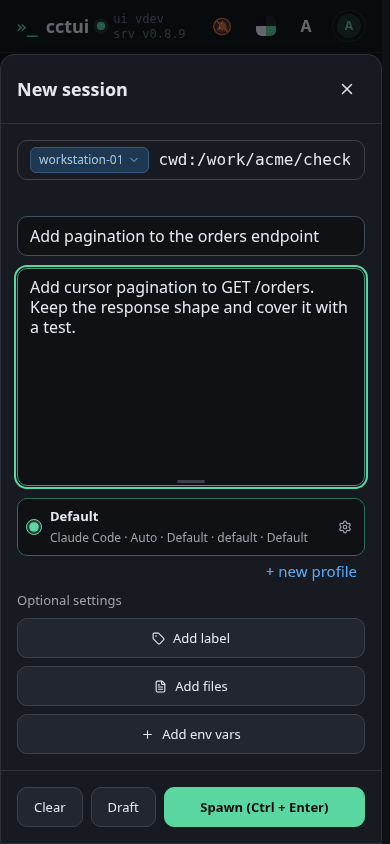
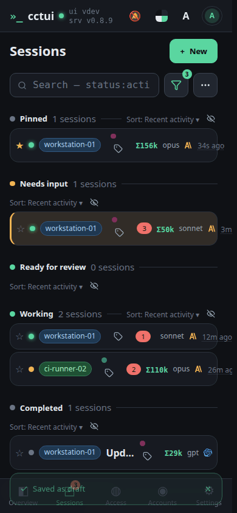
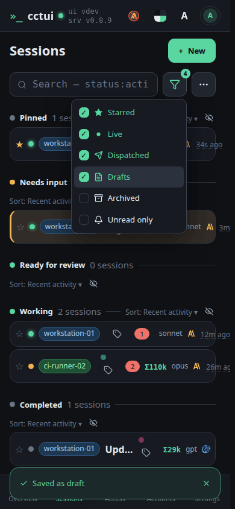

Open the new-session dialog One dialog covers everything a run needs: the machine, the folder, the prompt and the profile. It opens on the folder you used last.

Say what you want done The prompt is the whole brief; the profile below it decides which harness, model and folder carry it out.

Keep it for later Saving a draft parks the whole configuration in the list, ready to launch when you are.

The draft is waiting Drafts sit in their own section, holding the machine, folder, profile and prompt until you launch them.